RUPIATI SAPUTRI DAHLAN
Lulusan S1 Manajemen Universitas Muhammadiyah Palopo yang memiliki minat dalam bidang administrasi, manajemen, dan pelayanan serta memiliki pengalaman publikasi karya ilmiah. Mampu bekerja secara teliti, bertanggung jawab, mudah beradaptasi, dan memiliki kemauan tinggi untuk terus belajar serta berkontribusi positif di dunia kerja.
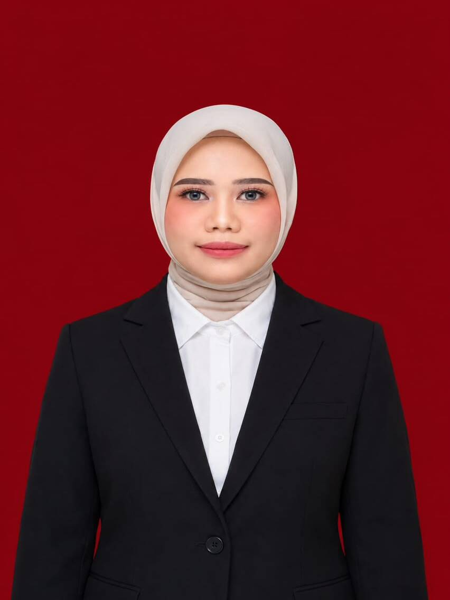
Kemampuan & Bidang Minat
Berfokus pada bidang administrasi, manajemen sumber daya manusia, dan pelayanan yang berorientasi pada kualitas, ketelitian, serta akuntabilitas.
Administrasi & Dokumen
Terampil dalam penyusunan laporan, pengolahan data, tata kelola dokumen, dan administrasi perkantoran yang tertata rapi.
Manajemen SDM
Memahami konsep perencanaan SDM, penilaian kinerja pegawai, dan penerapan Green Human Resource Management di organisasi.
Pelayanan & Komunikasi
Kemampuan komunikasi aktif berbahasa Indonesia, etika pelayanan ramah, responsif, dan mampu menjalin relasi kerja yang solid.
Manajemen Waktu & Adaptasi
Bekerja teliti, bertanggung jawab, cepat belajar hal baru, dan memiliki manajemen waktu yang efisien dalam menyelesaikan tugas.
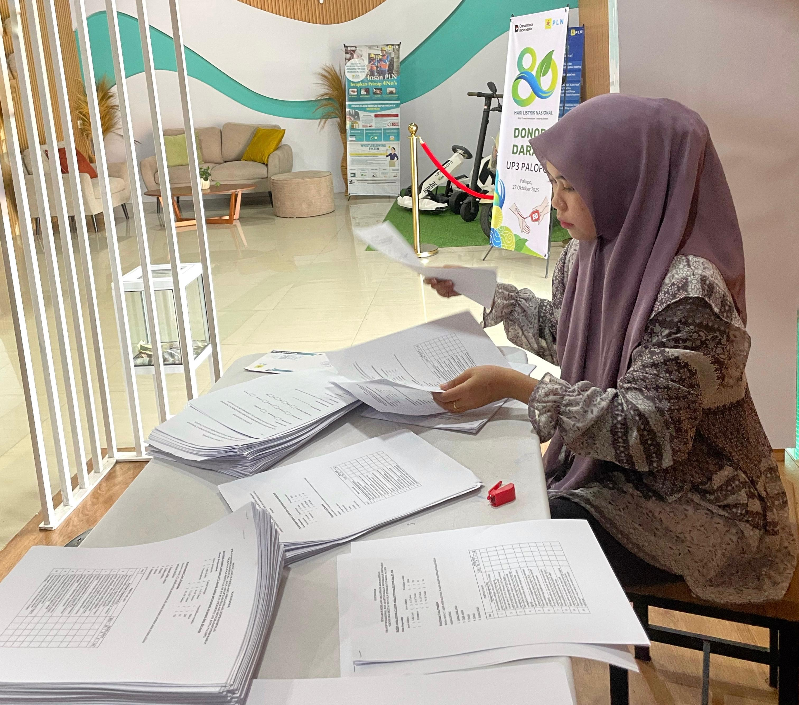
Siap Berkontribusi Nyata.
Bertekad meningkatkan kompetensi melalui Maganghub Kemnaker sebagai bekal untuk memasuki dunia kerja profesional dan memberikan kontribusi terbaik di lingkungan kerja.
Universitas Muhammadiyah Palopo
S1 Manajemen | IPK 3,93/4.00 (Sep 2022 – Agu 2026)
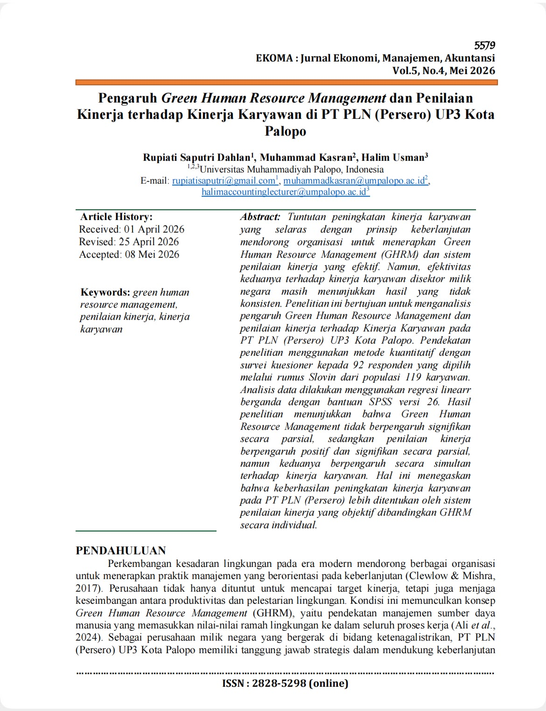
Jurnal EKOMA Vol. 5, No. 4 (Mei 2026)
Studi Green HRM dan Penilaian Kinerja Karyawan di PT PLN (Persero) UP3 Kota Palopo.
Keterampilan Utama
Daftar Pencapaian
Publikasi karya ilmiah nasional terakreditasi SINTA, prestasi kompetisi, dan keaktifan organisasi.
Skripsi & Publikasi Ilmiah
“Pengaruh Green Human Resource Management dan Penilaian Kinerja Terhadap Kinerja Karyawan di PT PLN (Persero) UP3 Kota Palopo”
• Dipublikasikan pada: Jurnal EKOMA
• Volume & Nomor: Vol. 5, No. 4, Mei 2026, Hal. 5579
• Terakreditasi: SINTA 4
Publikasi Riset Manajemen & Kreativitas
Peran Pakar dalam Perencanaan SDM
“Bagaimana peran pakar dalam perencanaan SDM menemukan pola yang tepat ketika sudah menjadi pegawai.”
Vol. 8, No. 6, Juni 2024 • E-ISSN: 2118-7453
Pemanfaatan Limbah Kain Perca
“Pemanfaatan limbah kain perca menjadi tas tote bag yang bernilai jual dalam rangka mengembangkan kreativitas mahasiswa.”
Vol. 7, No. 1, Juni 2024, Hal. 17–25
Mini Kompetisi Kampus
Juara 2 mini kompetisi di kampus Universitas Muhammadiyah Palopo dengan judul karya: "Pemanfaatan kawat bulu menjadi produk buket kerajinan dan bernilai ekonomis."
Pengkaderan DAD & IMM
Telah mengikuti DAD (Darul Arqam Dasar) dan aktif bergabung dalam organisasi Ikatan Mahasiswa Muhammadiyah (IMM) Universitas Muhammadiyah Palopo.
Pendidikan & Pengalaman
Perjalanan akademik, pengabdian kepada masyarakat, pelatihan lingkungan hidup, dan program sertifikasi keahlian.
Universitas Muhammadiyah Palopo
S1 Manajemen | IPK 3,93 / 4.00
Menyelesaikan studi dengan predikat sangat memuaskan, fokus pada Manajemen SDM. Skripsi & publikasi ilmiah berjudul: “Pengaruh Green Human Resource Management dan Penilaian Kinerja Terhadap Kinerja Karyawan di PT PLN (Persero) UP3 Kota Palopo” (Jurnal EKOMA Vol. 5, No. 4, Mei 2026, SINTA 4).
Kuliah Kerja Nyata (KKN)
Desa Lauwo, Kec. Burau, Kab. Luwu Timur
- Literasi Bersama Anak-Anak: Kegiatan pengabdian masyarakat yang berfokus pada peningkatan minat baca dan kecakapan menulis anak di lingkungan desa.
- Seminar Terpadu: Menyelenggarakan seminar yang mengintegrasikan 3 topik utama: seminar kelautan, pencegahan bullying, dan pengenalan kecerdasan buatan (AI).
Pelatihan Lingkungan Pesisir
Desa Lauwo, Luwu Timur
Mengikuti pelatihan Menanam Pohon Bakau (Mangrove) serta pembibitan di pinggir laut Desa Lauwo sebagai aksi nyata pelestarian ekosistem pesisir pantai dan konservasi alam.
Sertifikasi & Seminar Kompetensi
Galeri Dokumentasi
Rangkuman visual penelitian karya ilmiah, pengabdian masyarakat (KKN), pelatihan, dan sertifikasi.
Green HRM di PT PLN UP3 Palopo
Jurnal EKOMA Vol. 5, No. 4, Mei 2026
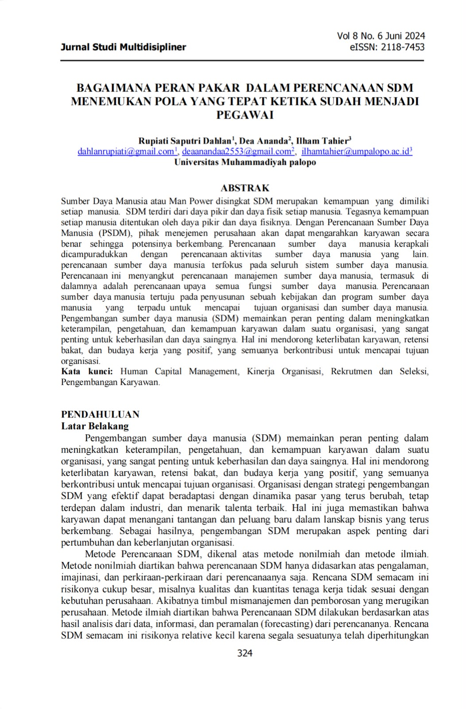
Peran Pakar Perencanaan SDM
Vol. 8, No. 6, Juni 2024 • E-ISSN: 2118-7453
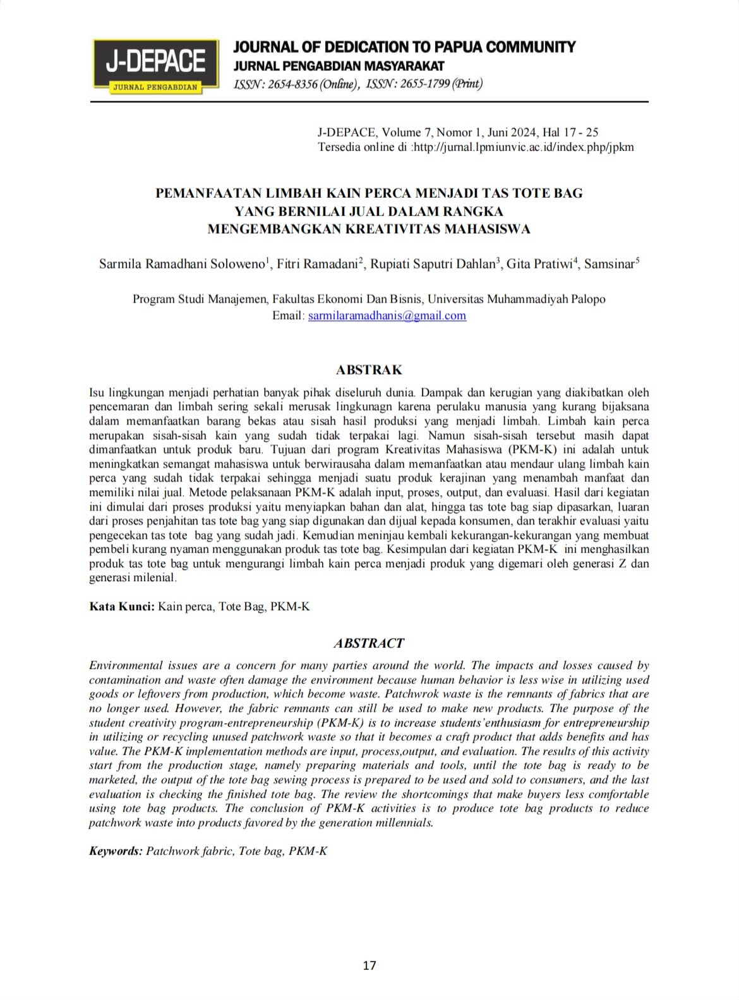
Tote Bag Limbah Kain Perca
Kreativitas Mahasiswa • Vol. 7, No. 1, Juni 2024
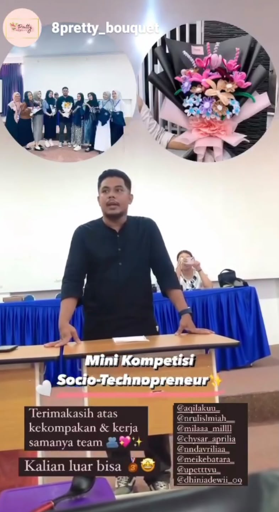
Juara 2 Buket Kawat Bulu
Mini Kompetisi Kampus UM Palopo
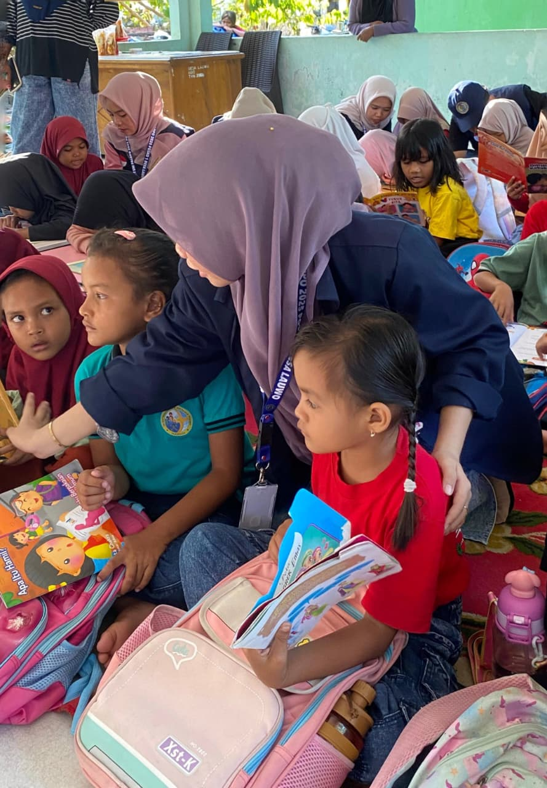
Literasi Bersama Anak-Anak
Peningkatan minat baca & menulis di Desa Lauwo
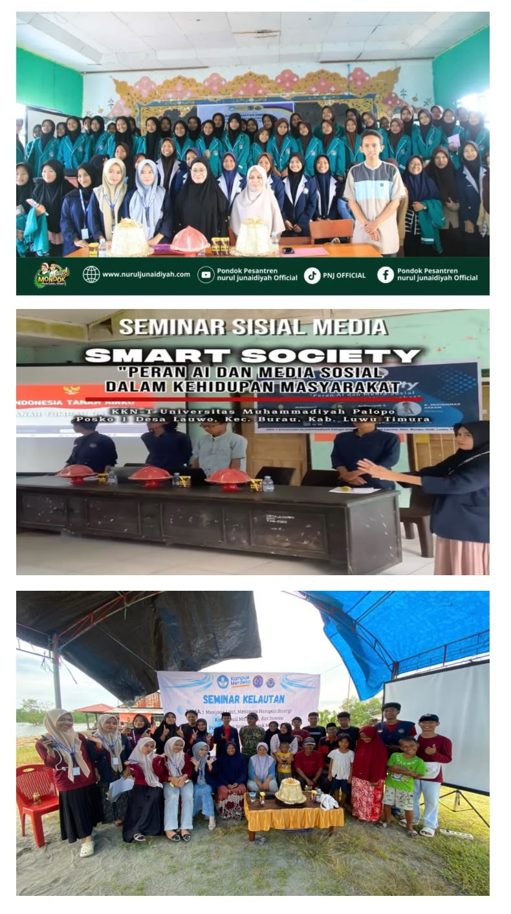
Seminar 3 Topik Terpadu
Kelautan, Pencegahan Bullying, dan Pengenalan AI
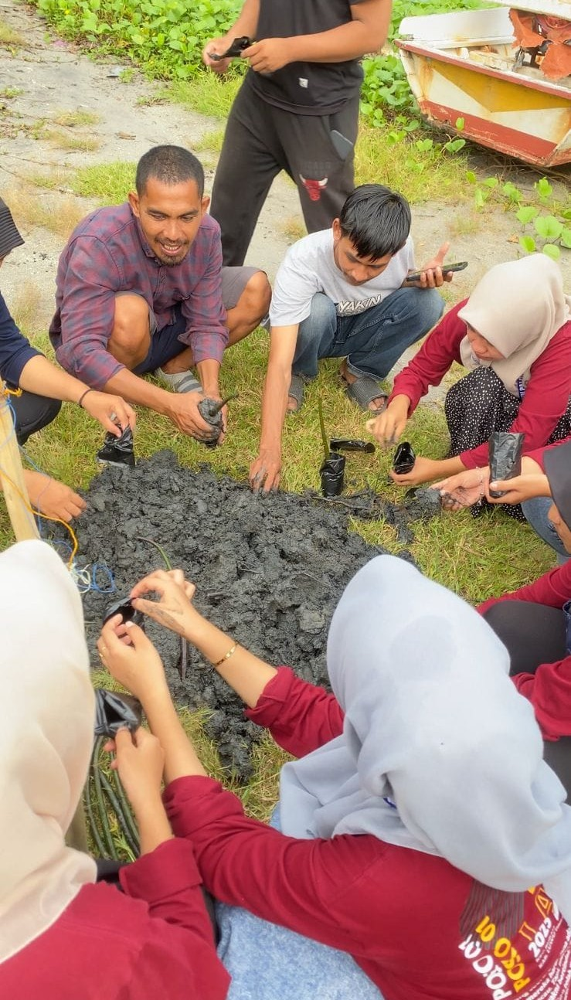
Pembibitan Pohon Bakau (Mangrove)
Pinggir laut Desa Lauwo • Mei 2025
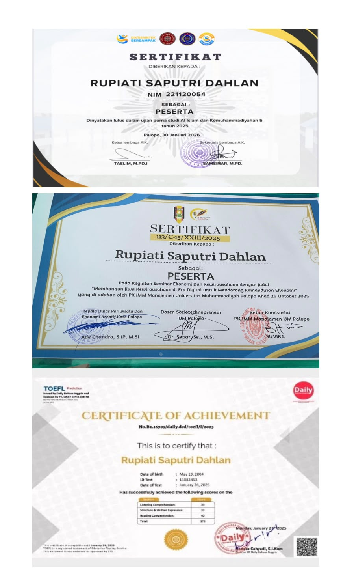
Digital Human Resource
Serta Sertifikasi AIK, Kewirausahaan & TOEFL
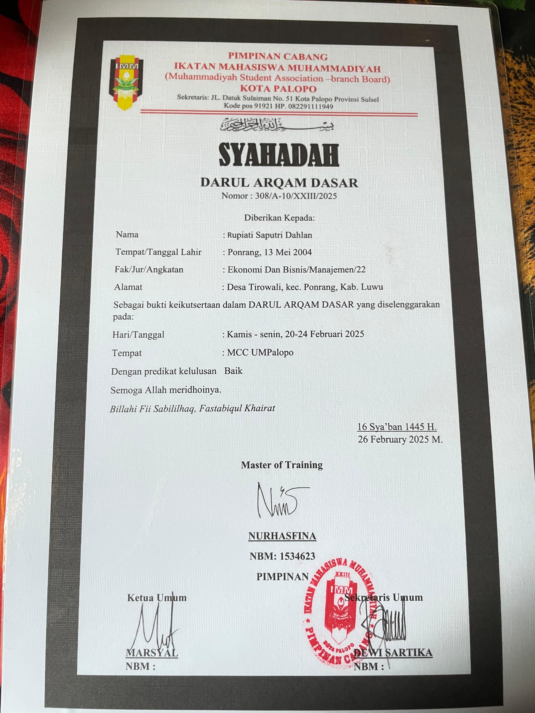
Darul Arqam Dasar (DAD) - IMM
Ikatan Mahasiswa Muhammadiyah UM Palopo
MARI BEKERJA SAMA
Siap berkontribusi secara profesional di bidang administrasi, manajemen sumber daya manusia, dan pelayanan kerja. Terbuka untuk kesempatan kerja, Maganghub Kemnaker, dan kolaborasi positif.